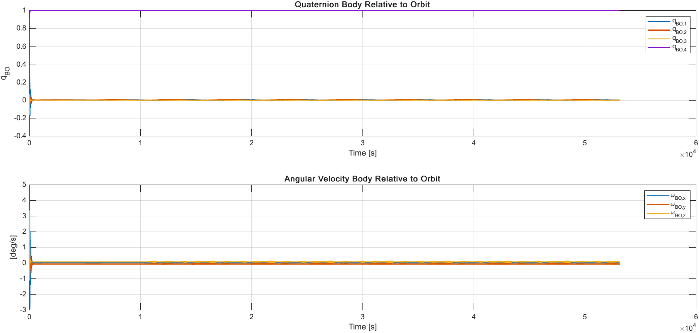
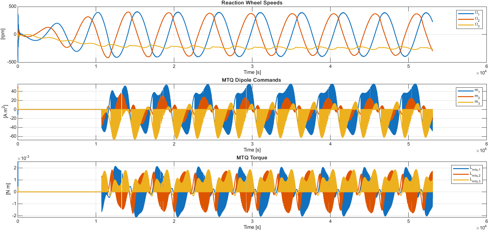

SPACECRAFT · ADCS · MATLAB
Spacecraft Attitude Control & Momentum Management
Closed-loop simulation of nadir-pointing attitude regulation using reaction wheels and magnetorquer momentum dumping.
Problem
Maintain a spacecraft in a nadir-pointing attitude despite initial orbit-relative rotation and external disturbance torque, while also managing the angular momentum stored in the reaction wheels.
My role
Developed the dynamics, orbit-frame attitude formulation, feedback controller, reaction-wheel and magnetorquer models, simulation, verification plots, and visualization.
Workflow
Approach
The simulation propagates orbital and rigid-body attitude dynamics, computes the spacecraft attitude relative to the orbit frame, and applies a quaternion-based PD controller. Reaction wheels provide three-axis control torque while magnetorquers unload accumulated wheel momentum using the modeled geomagnetic field. Aerodynamic disturbance torque is included in the closed-loop simulation.
Simulation
The animation shows the spacecraft evolving from its initial attitude to orbit-frame regulation while maintaining nadir pointing.
Selected results


Outcome
Built an end-to-end spacecraft attitude simulation demonstrating nadir-pointing regulation with reaction wheels and magnetic momentum management over multiple orbits.